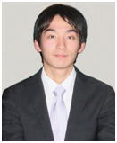

日本同盟基督教団
上大岡聖書教会
Kamiooka Bible Church
教会の案内
教会の歴史
教会の信仰
集会案内
教会学校
教会の様子
青年会
説教を聞く
教会の地図
リンク
牧師 紹介

鈴木 大輝 牧師
１９８４年 牧師の息子として、また６人兄弟の末っ子として
東京都町田市に生まれる。
１９９９年 長野県松原湖バイブルキャンプにて
救いの確信が与えられ、
中学３年生のクリスマスに、町田南キリスト教会にて
洗礼を受ける。
その後、hi-b.a. （高校生聖書伝道協会）の
集会を通して献身の思いが与えられる。
２００７年 東京基督教大学神学部神学科卒業。
日本同盟基督教団 町田南キリスト教会
協力伝道師に就任。
またhi-b.a.の協力スタッフとなり、現在に至る。
２０１０年 同教団 上大岡聖書教会 伝道師として就任。
２０１１年 同教会 牧師として就任。
日本同盟基督教団
上大岡聖書教会 牧師：鈴木大輝
〒234-0052 横浜市港南区笹下 7-13-2 ℡ 045-845-4536